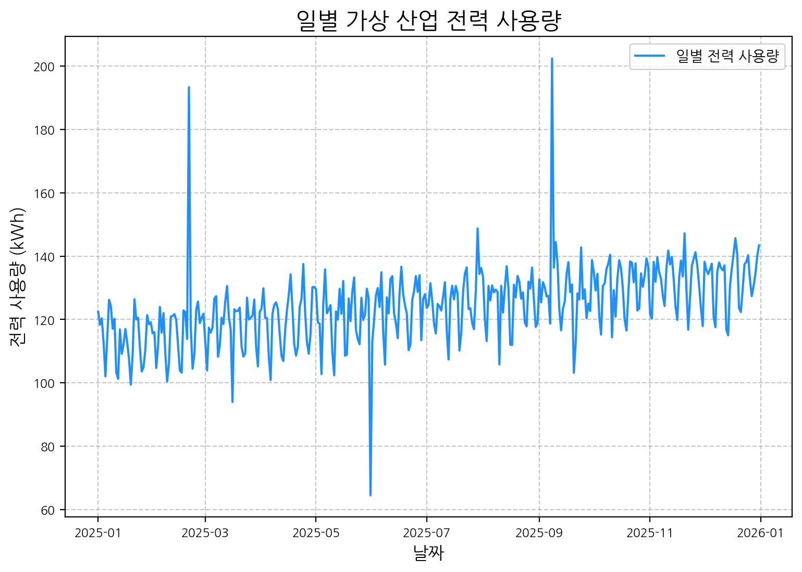
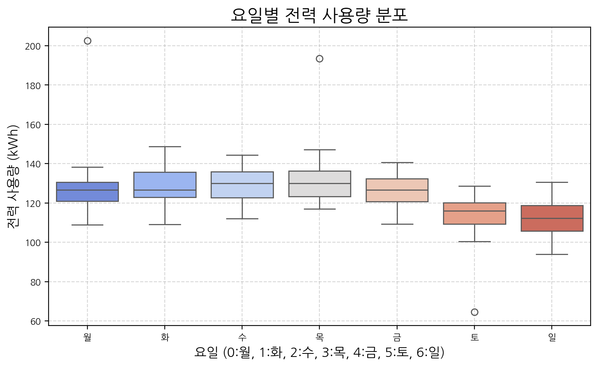

import pandas as pd
import numpy as np
import matplotlib.pyplot as plt
import seaborn as sns # 향상된 시각화를 위한 Seaborn
from datetime import datetime
# 경고 메시지 무시 (선택 사항)
import warnings
warnings.filterwarnings('ignore')유클리드소프트에서 진행하는 ABC 프로젝트 멘토링에 8기로 참여하게 되었습니다.
[산업 전력 데이터의 이상치 탐지 성능 향상 솔루션 구축]을 주제로 다양한 데이터 분석 및 인공지능 기법을 학습하고 실제 프로젝트에 적용해볼 예정입니다.
Tip
해당 포스트에서는 첫 주차 활동으로, 산업 전력 데이터의 이상치 탐지를 목표로 시계열 데이터의 기본적인 탐색적 데이터 분석(EDA) 및 전처리 방법에 초점을 맞추어 정리했습니다. 효과적인 이상 탐지를 위한 데이터 이해 과정을 살펴봅니다.
시계열 데이터란?
시계열 데이터(Time Series Data)는 일정 시간 간격으로 기록된 데이터 포인트들의 순차적인 집합입니다. 예를 들어, 시간별 산업 설비의 전력 사용량, 일별 주가, 월별 웹사이트 방문자 수 등이 시계열 데이터에 해당합니다. 이러한 데이터는 시간의 흐름에 따른 변화와 패턴을 분석하는 데 사용되며, 특히 정상적인 패턴에서 벗어나는 ’이상치’를 탐지하는 데 중요한 기초 자료가 됩니다.
시계열 데이터는 주로 다음과 같은 특징을 가집니다:
- 추세 (Trend): 데이터가 장기적으로 증가하거나 감소하는 경향.
- 계절성 (Seasonality): 특정 주기(예: 하루, 주, 월)에 따라 반복되는 패턴.
- 주기성 (Cyclicality): 계절성보다 긴, 고정되지 않은 주기의 변동.
- 불규칙 변동 (Irregular Fluctuations/Noise): 위 요소들로 설명되지 않는 무작위적 변동.
시계열 이상 탐지에서 EDA와 전처리의 중요성
이상치(Anomaly) 또는 특이점(Outlier)은 일반적인 데이터 패턴에서 현저하게 벗어나는 관측치를 의미합니다. 산업 전력 데이터에서 이상치는 설비 고장, 에너지 누수, 비정상적 공정 운영 등 중요한 문제를 시사할 수 있습니다. 효과적인 이상 탐지를 위해서는 데이터에 대한 깊이 있는 이해가 선행되어야 하며, 탐색적 데이터 분석(EDA)과 적절한 전처리는 이 과정의 핵심입니다.
EDA와 전처리가 중요한 이유:
- 데이터 특성 파악: 데이터의 분포, 추세, 계절성 등 기본적인 통계적 특성을 이해하여 ‘정상’ 상태의 기준을 설정하는 데 도움을 줍니다.
- 잠재적 이상치 식별: 시각화 등을 통해 예상치 못한 급증, 급감 또는 패턴 변화를 초기에 발견할 수 있습니다.
- 데이터 품질 향상: 결측치 처리, 노이즈 제거 등을 통해 분석의 정확도를 높입니다.
- 피처 엔지니어링 기반 마련: 분석 목적에 맞는 새로운 변수를 생성하거나 기존 변수를 변환하는 데 필요한 통찰력을 제공합니다.
- 적절한 이상 탐지 모델 선택 지원: 데이터의 특성에 맞는 이상 탐지 알고리즘을 선택하는 데 중요한 정보를 제공합니다.
Python을 이용한 시계열 데이터 EDA 및 전처리 기초
Python의 pandas, numpy, matplotlib, seaborn 라이브러리를 사용하여 산업 전력 사용량 데이터를 가정하고, 이상 탐지를 위한 기본적인 EDA 및 전처리 과정을 살펴보겠습니다.
1. 필요한 라이브러리 불러오기
데이터 분석 및 시각화에 필요한 라이브러리를 가져옵니다.
2. 분석용 샘플 시계열 데이터 생성 (가상 산업 전력 사용량)
실제 산업 전력 데이터와 유사한 특성을 갖도록 가상 데이터를 생성합니다. 여기에는 일정한 기본 사용량, 약간의 증가 추세, 주간 계절성(평일 사용량 증가, 주말 감소), 그리고 몇 개의 인위적인 이상치(스파이크 및 급감)를 포함시킵니다.
# 재현성을 위한 시드 설정
np.random.seed(42)
# 날짜 범위 생성 (약 1년)
date_rng = pd.date_range(start='2025-01-01', periods=365, freq='D')
data = pd.DataFrame(date_rng, columns=['date'])
# 기본 전력 사용량 설정 및 추세 생성
baseline_usage = 100 # 기본 사용량 (예: kWh)
trend_factor = np.linspace(0, 20, len(date_rng)) # 선형 증가 추세
# 주간 계절성 생성 (월:0 ~ 일:6)
# 산업 데이터 특성상 평일 사용량 높고, 주말 낮음
day_of_week_effect = np.array([15, 18, 20, 19, 17, 5, 3])
seasonal_factor = np.array([day_of_week_effect[day.weekday()] for day in date_rng])
# 임의의 노이즈 생성
noise = np.random.normal(0, 5, size=(len(date_rng))) # 평균 0, 표준편차 5
# 데이터 생성 (전력 사용량 = 기본값 + 추세 + 계절성 + 노이즈)
data['power_usage'] = baseline_usage + trend_factor + seasonal_factor + noise
# 인위적인 이상치(스파이크 및 급감) 추가
data.loc[data.index[50], 'power_usage'] += 70 # 51번째 날에 큰 스파이크
data.loc[data.index[150], 'power_usage'] -= 50 # 151번째 날에 큰 폭 하락
data.loc[data.index[250], 'power_usage'] += 80 # 251번째 날에 큰 스파이크
# 데이터 값 보정 (음수 방지 및 최소값 설정)
data['power_usage'] = data['power_usage'].astype(float).clip(lower=10)
# 'date' 컬럼을 인덱스로 설정
data.set_index('date', inplace=True)
print("생성된 가상 전력 사용량 데이터 샘플 (상위 5개):")
print(data.head())
print("\n생성된 가상 전력 사용량 데이터 샘플 (하위 5개):")
print(data.tail())생성된 가상 전력 사용량 데이터 샘플 (상위 5개):
power_usage
date
2025-01-01 122.483571
2025-01-02 118.363624
2025-01-03 120.348333
2025-01-04 112.779984
2025-01-05 102.049013
생성된 가상 전력 사용량 데이터 샘플 (하위 5개):
power_usage
date
2025-12-27 127.376952
2025-12-28 130.498859
2025-12-29 134.346309
2025-12-30 139.953614
2025-12-31 143.450720이 샘플 데이터는 power_usage라는 이름으로 전력 사용량 정보를 가지며, EDA 과정에서 이상치를 시각적으로 탐색하는 데 사용됩니다.
3. 데이터 기본 탐색
데이터의 구조와 기본적인 통계적 특성을 확인합니다.
print("데이터 정보:")
data.info()
print("\n기술 통계량:")
print(data.describe())
print(f"\n결측치 확인: {data.isnull().sum().sum()} 개")
# data.isnull().sum() # 컬럼별 결측치 확인데이터 정보:
<class 'pandas.core.frame.DataFrame'>
DatetimeIndex: 365 entries, 2025-01-01 to 2025-12-31
Data columns (total 1 columns):
# Column Non-Null Count Dtype
--- ------ -------------- -----
0 power_usage 365 non-null float64
dtypes: float64(1)
memory usage: 5.7 KB
기술 통계량:
power_usage
count 365.000000
mean 124.197677
std 11.877300
min 64.494222
25% 117.423353
50% 124.093359
75% 131.043033
max 202.431844
결측치 확인: 0 개info()는 데이터 타입, 인덱스 정보, 메모리 사용량 등을 보여줍니다. describe()는 평균, 표준편차, 최소/최대값, 사분위수 등 주요 기술 통계량을 제공하여 데이터의 전반적인 분포를 파악하는 데 도움을 줍니다. 결측치가 있다면 이상 탐지 분석 전에 적절히 처리(예: 보간, 제거)해야 합니다. 이 샘플에서는 결측치가 없습니다.
4. 주요 시각화를 통한 탐색적 데이터 분석 (EDA)
시각화는 시계열 데이터의 패턴과 잠재적 이상치를 발견하는 데 매우 효과적입니다.
4.1. 기본 시계열 플롯
전체 기간에 대한 전력 사용량 변화를 시각화하여 추세, 계절성, 그리고 눈에 띄는 이상 패턴을 관찰합니다.
plt.figure(figsize=(9, 6))
plt.plot(data.index, data['power_usage'], label='일별 전력 사용량', color='dodgerblue', linewidth=1.5)
plt.title('일별 가상 산업 전력 사용량', fontsize=16)
plt.xlabel('날짜', fontsize=12)
plt.ylabel('전력 사용량 (kWh)', fontsize=12)
plt.legend()
plt.grid(True, linestyle='--', alpha=0.7)
plt.show()

위 그래프에서 전반적인 증가 추세와 주기적인 변동(계절성) 외에도, 몇몇 지점에서 급격한 스파이크나 하락(우리가 삽입한 이상치)이 시각적으로 확인됩니다. 실제 데이터 분석 시 이러한 지점들이 조사 대상이 됩니다.
4.2. 데이터 분포 확인 (히스토그램 및 KDE)
전력 사용량 값들의 분포를 확인하여 데이터가 특정 구간에 집중되어 있는지, 또는 분포에서 벗어나는 값들이 있는지 살펴봅니다.
plt.figure(figsize=(10, 6))
sns.histplot(data['power_usage'], kde=True, color='mediumseagreen', bins=30)
plt.title('전력 사용량 분포 (히스토그램 및 KDE)', fontsize=16)
plt.xlabel('전력 사용량 (kWh)', fontsize=12)
plt.ylabel('빈도', fontsize=12)
plt.grid(True, linestyle='--', alpha=0.5)
plt.show()히스토그램과 KDE(Kernel Density Estimate) 플롯은 데이터 값의 분포를 보여줍니다. 만약 분포의 꼬리 부분에 값이 드물게 나타난다면 이는 이상치일 가능성이 있습니다. 우리가 삽입한 인위적인 스파이크 값들이 분포의 오른쪽 꼬리 부분에 나타날 수 있습니다.
4.3. 주기적 패턴 확인 (요일별 Box Plot)
산업 데이터는 요일이나 월별로 뚜렷한 주기성을 가질 수 있습니다. Box plot을 사용하면 이러한 주기성 내에서 평소와 다른 패턴을 보이는 시점을 파악하는 데 유용합니다.
# 분석을 위해 'day_of_week' 컬럼 추가 (월요일=0, 일요일=6)
data['day_of_week'] = data.index.dayofweek
plt.figure(figsize=(9, 5))
sns.boxplot(x='day_of_week', y='power_usage', data=data, palette='coolwarm')
plt.title('요일별 전력 사용량 분포', fontsize=16)
plt.xlabel('요일 (0:월, 1:화, 2:수, 3:목, 4:금, 5:토, 6:일)', fontsize=12)
plt.ylabel('전력 사용량 (kWh)', fontsize=12)
plt.xticks(ticks=range(7), labels=['월', '화', '수', '목', '금', '토', '일'])
plt.grid(True, linestyle='--', alpha=0.5)
plt.show()

요일별 Box plot은 각 요일의 전력 사용량 분포를 보여줍니다. 각 박스는 해당 요일 데이터의 중앙 50%(IQR: Interquartile Range)를 나타내며, 박스 외부의 점들은 잠재적인 이상치(outliers)를 의미합니다. 이 샘플에서는 주말(토, 일) 사용량이 평일보다 낮은 패턴이 뚜렷하며, 우리가 인위적으로 삽입한 이상치들이 특정 요일의 일반적인 범위를 벗어나 점으로 표시될 수 있습니다. 예를 들어, 화요일(1)에 발생시킨 스파이크는 화요일의 박스 플롯에서 상단 이상치로 나타날 가능성이 큽니다.
5. 이동 평균을 활용한 추세 및 변동성 관찰
이동 평균(Moving Average)은 단기적인 변동을 완화하여 장기적인 추세를 파악하거나, 데이터의 일반적인 수준을 나타내는 기준으로 활용될 수 있습니다. 원본 데이터와 이동 평균선을 함께 시각화하면, 이동 평균에서 크게 벗어나는 지점들을 이상치 후보로 간주할 수 있습니다.
# 7일 이동 평균 계산
data['rolling_mean_7'] = data['power_usage'].rolling(window=7, center=True).mean() # center=True로 설정하여 lag 감소 효과
plt.figure(figsize=(9, 6))
plt.plot(data.index, data['power_usage'], label='일별 전력 사용량', color='lightskyblue', alpha=0.8, linewidth=1)
plt.plot(data.index, data['rolling_mean_7'], label='7일 이동 평균 (중앙 정렬)', color='orangered', linewidth=2)
plt.title('일별 전력 사용량 및 7일 이동 평균', fontsize=16)
plt.xlabel('날짜', fontsize=12)
plt.ylabel('전력 사용량 (kWh)', fontsize=12)
plt.legend()
plt.grid(True, linestyle='--', alpha=0.7)
plt.show()# 이동 평균과의 차이(잔차와 유사한 개념)를 통해 이상치 강조
data['deviation_from_ma'] = data['power_usage'] - data['rolling_mean_7']
plt.figure(figsize=(9,5))
plt.plot(data.index, data['deviation_from_ma'], label='이동 평균과의 편차', color='teal', linewidth=1, marker='o', markersize=3, linestyle='None')
plt.axhline(0, color='black', linestyle='--', linewidth=0.8) # 기준선
# 편차의 임계값을 설정하여 이상치 후보 시각화 (예: 편차의 표준편차 기반)
# 이동 평균 계산 시 초반/후반 NaN 값이 있을 수 있으므로 dropna() 사용
deviation_std = data['deviation_from_ma'].dropna().std()
upper_threshold = 3 * deviation_std
lower_threshold = -3 * deviation_std
plt.axhline(upper_threshold, color='red', linestyle=':', linewidth=1.5, label=f'+3σ ({upper_threshold:.2f})')
plt.axhline(lower_threshold, color='red', linestyle=':', linewidth=1.5, label=f'-3σ ({lower_threshold:.2f})')
plt.title('이동 평균과의 편차 (이상치 탐색 보조)', fontsize=16)
plt.xlabel('날짜', fontsize=12)
plt.ylabel('편차 (kWh)', fontsize=12)
plt.legend()
plt.grid(True, linestyle='--', alpha=0.5)
plt.show()7일 이동 평균선은 데이터의 단기적 변동을 평탄화하여 보여줍니다. rolling() 함수에서 center=True 옵션을 사용하면 이동 평균 계산 시 윈도우의 중앙에 값을 위치시켜 시각화 시 원본 데이터와의 지연(lag)을 줄이는 데 도움이 됩니다.
두 번째 그래프는 원본 데이터와 이동 평균과의 편차를 보여줍니다. 이 편차가 특정 임계값(예: 편차의 3 표준편차, ±3σ)을 넘어서는 지점들은 잠재적인 이상치로 간주할 수 있습니다. 우리가 삽입한 인위적인 스파이크와 급감 지점에서 편차가 크게 나타나는 것을 확인할 수 있습니다. 이러한 방법은 간단하면서도 효과적인 이상치 탐색의 기초가 됩니다.
요약
이 포스트에서는 Python을 사용하여 가상의 산업 전력 사용량 데이터를 생성하고, 이상 탐지를 위한 기본적인 탐색적 데이터 분석(EDA) 및 전처리 과정을 살펴보았습니다. 시계열 플롯, 분포 확인, 주기성 분석(요일별 Box Plot), 이동 평균 활용 등은 데이터의 특성을 이해하고 잠재적인 이상치를 식별하는 데 효과적인 방법입니다.